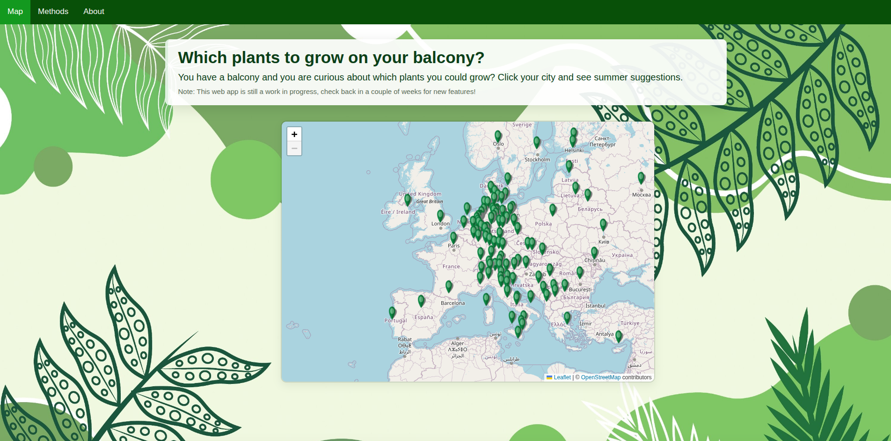
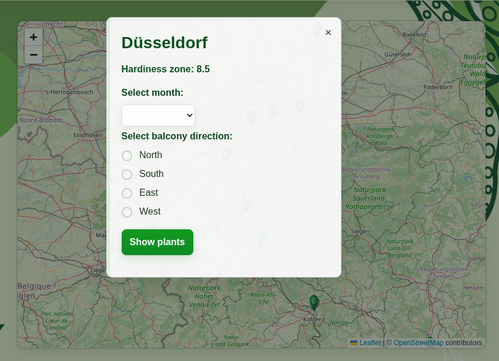
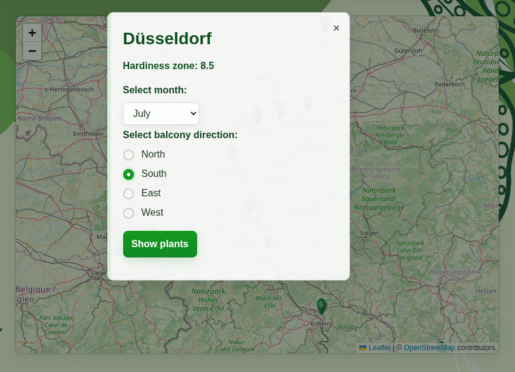
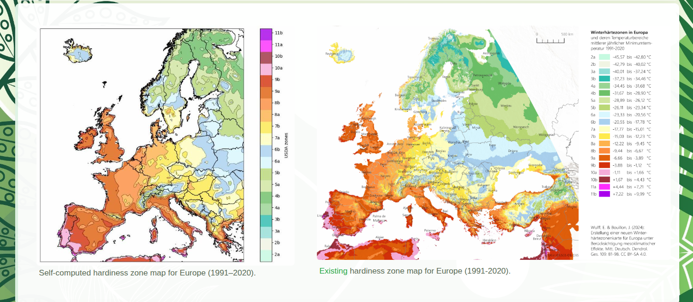
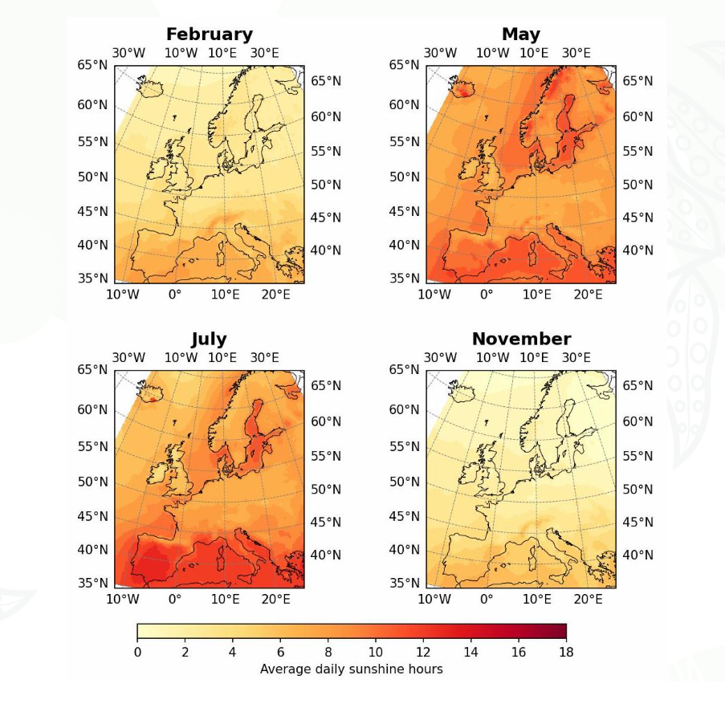

The goal of this project is to build a simple Django-based web application that recommends suitable plants for balconies. The app considers factors such as sunlight exposure, USDA hardiness zone and balcony direction to suggest plants that can thrive on a balcony.
Unfortunately, the project is not yet online, so for now, this page shows a preview of how the app looks and what it can do.
However, the code is available on my Github and can be downloaded. If you are curious,
you can install Django (see the official tutorial for setup) and run it locally.
This way, the app can be tried out and plants can be explored directly.
Note: This webapp is still a work in progress, and new features will be added step by step. Planned updates include the option to select any location, set the balcony size, and show the best time to plant.
App overview
In the "Map" section, an interactive map is shown and it is possible to select an European city. After picking a location, it is possible to choose the balcony direction and the month of interest. With this information, the app gives suggestions for plants that could work well under those conditions.

View of the interactive map

Selecting a city on the interactive map, with options for month and balcony direction

Example of the selection process
Below are some examples of results for cities in different USDA hardiness zones, combined with different balcony orientations.
In the "Methods" part, it is explained how the data behind the app was prepared. Climate data from the Copernicus Climate Data Store was used, focusing on shortwave radiation and minimum annual mean temperature. From temperature values USDA hardiness zone , which describe how cold a place usually gets in winter and which plants can survive there, were calculated.

Comparison of calculated USDA hardiness zones (left) with published reference map (right). Results look very similar.
where \(R_s\) is the surface shortwave radiation (MJ m⁻² day⁻¹), \(R_a\) is the extraterrestrial radiation (MJ m⁻² day⁻¹),
\(a_s\) and \(b_s\) are empirical coefficients (their sum represents the fraction of extraterrestrial radiation reaching the earth on clear days and are estimated to be 0.25 and 0.50 respectively),
\(n\) is the actual duration of sunshine (hours), and \(N\) is the maximum possible duration of sunshine or day length (hours).

Example of estimated monthly sunlight hours for different months
The plants database is a combination of various sources such as Ponics life and Victory Seeds.
The reference period used for the climate data is 1991–2020, as it best represents recent conditions while also taking climate change into account. The maps are produced on a gridded resolution, which smooths out local variations such as urban heat islands, courtyard effects, or shading from buildings. Sunlight hours are estimated using the FAO-56 empirical method, meaning that small-scale obstructions like shading from buildings or trees are not included. Finally, the plant database is a combination of various sources such as Ponics life and Victory Seeds, and it should be seen as suggestions rather than strict rules, since factors such as microclimate, soil type, pot size, and plant care also play an important role. As I am not a botanist, I would be very happy to receive feedback to improve the plant database and the app in general.